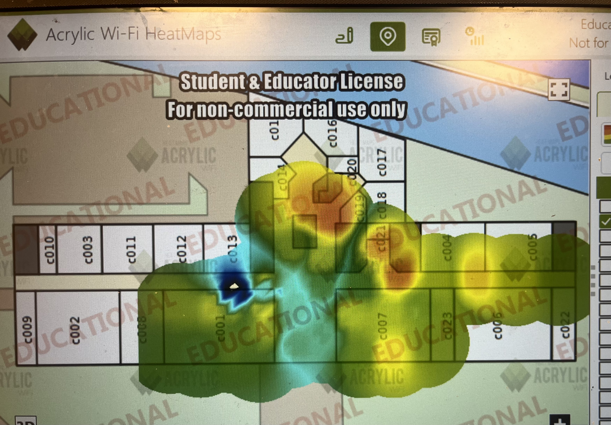

// 03 — Cartographies Wi-Fi
HeatMaps
de couverture
4 cartes réalisées avec Acrylic Wi-Fi HeatMaps — mesures RSSI superposées sur les plans de l'UHA.
Signal très faible / absent
Signal faible
Signal moyen
Signal bon
Signal fort (borne proche)

Bâtiment C · RDC
Bâtiment C — Rez-de-chaussée
Couverture partielle — zones fortes autour des bornes centrales (c014–c019), zones d'ombre en c010/c009 et extrémité droite (c022).

Bâtiment C · 1er étage
Bâtiment C — 1er Étage
Couverture plus homogène sur c101–c104/c107. Zone de signal fort localisée en c100 (borne proche). Angles moins couverts.

Bâtiment I · RDC
Bâtiment I — Rez-de-chaussée
Mesures réalisées sur le rez-de-chaussée du bâtiment I — analyse de la distribution du signal selon l'architecture des lieux.

Bâtiment I · 1er étage
Bâtiment I — 1er Étage
Cartographie du 1er étage du bâtiment I — identification des zones de couverture forte et des angles moins bien desservis.